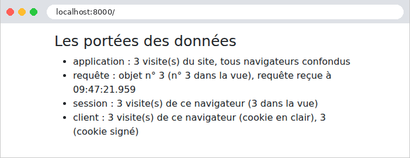

6. Data Scopes
A web application serves many users at once, and each user makes numerous requests. Data can therefore be shared at several levels, known as its scope:
- application scope: the data is shared by all users throughout the application’s lifetime (the list of doctors, for example);
- request scope: the data exists only for the duration of processing a request (a view’s model, the logged-in user as identified for that request);
- session scope: the data is specific to a user and must persist from one request to the next (the selected language, a shopping cart);
- client scope: data stored in the browser itself, in a cookie.
In [PHP], these scopes behave in a particular way because the application is rebuilt with every request (Example 01): nothing survives in memory from one request to the next. Any data that needs to last longer than a single request is therefore stored outside of [PHP]: in the cache, a database, files, or on the client’s side. This is the so-called “shared-nothing” architecture: each request is processed in isolation by a process that shares nothing with those processing other requests. This approach has significant advantages: an error affects only a single request, no data leaks from one user to another, and multiple identical servers can be run behind a load balancer, provided they share the same cache and database.
In [Symfony], each scope has its own container:
Scope | Container | Lifetime |
application | the cache (service [cache.app], example 20), or the database | the selected duration, or unlimited |
Query | the container’s services (one object per class, during the request), the request attributes (example 12) | processing a request |
session | the session ([$request->getSession()], Example 20), maintained by the server and retrieved via a cookie | until the browser is closed by default, and at most for the duration of the [PHP] session (24 minutes of inactivity by default) |
client | a cookie ([Cookie::create], example 22), in plain text | The cookie's expiration time |
The [Symfony] session is a server-side session, like those for [Java] ([JSESSIONID]) or the standard [PHP], from which it actually borrows the mechanism and the cookie ([PHPSESSID]): its data is stored on the server (one file per session, with the configuration used in our examples), and the browser holds only the identifier—a random number that is impossible to guess. This differs from [Flask], whose entire session is stored in a signed cookie on the client’s side.
6.1. Example 23: Scopes
The file [config/packages/framework.yaml] configures the session and locks, as in Example 20.
6.1.1. The objects: src/Service/CompteurService.php and RequeteInfos.php
- lines 12–16: the service receives the application cache and the lock factory (Example 20);
- lines 20–32: an application-scope counter: a number stored in the cache under a key and incremented by 1 on each call. The “file” cache in our examples does not support atomic increment operations: the value must be read, incremented, and then written, and two concurrent requests could read the same value—resulting in a missed hit. A lock—one per key—therefore protects both read and write operations; the block [finally] releases it in all cases, even after the [return] in line 28;
- lines 34–37: the visit counter.
- lines 10–12: properties declared as [readonly] one by one (rather than the entire class): they can only be assigned once, by the constructor;
- lines 16–22: request-scope information: a number, derived from a counter shared by all requests (the previous service, under a different key), and the request time, including milliseconds ([v] format). The constructor receives the [CompteurService] from the container: a service can request another service, just like an action.
No configuration is required: by default, a service in the container is shared (shared). The container creates the object on the first request, then returns the same one to all subsequent requests. In standard [PHP] mode, the container is rebuilt with each request: a shared service is therefore a request-scoped object. (You can also request a new object with each injection using the [shared: false] option in the [services.yaml] file.) A nuance arises with application servers that keep the application in memory from one request to the next to improve performance, such as the worker mode of [FrankenPHP]: in this case, a service is shared by all requests handled by the process. [Symfony] then resets, between requests, the services that implement the [ResetInterface] interface; it is up to those services to ensure that nothing is retained from one request to the next.
6.1.2. A global variable for the views: config/packages/twig.yaml
- Lines 6–7: A global variable in the views (Example 15) can be a service: the name of its class, preceded by [@]. All views thus have access to the variable [infos], which is the [RequeteInfos] object of the current request. [Twig] has no equivalent to the [@inject] directive of [Blade]: a view does not request anything from the container; it receives what is given to it.
6.1.3. Signed cookies: src/Service/CookiesSignes.php
A cookie is a piece of data entrusted to the client, which can read and modify it. [Laravel] encrypts its cookies; [Symfony] does not. For a cookie to be trustworthy, however, it simply needs to be signed: its value is transmitted in plaintext, but it is followed by a signature that only the server knows how to calculate, because it depends on a secret key. A value modified by the client no longer has the correct signature, and the server rejects it.
- line 13: The signature key is the application’s secret—the variable [APP_SECRET] in the file [.env] (Example 01)—which the container recognizes as the parameter [kernel.secret]. A parameter is not an object: the attribute [#[Autowire]] tells the container the value to provide, where [%nom%] refers to a parameter;
- lines 18–21: The signature is HMAC (Hash-based Message Authentication Code): the SHA-256 hash of the value, calculated using the secret key, written in hexadecimal. The cookie contains the value, a period, and then the signature;
- Lines 24–34: The verification process recalculates the signature of the received value and compares it to the one in the cookie. [hash_equals] compares two strings in a time that does not depend on the number of identical characters: a standard comparison would stop at the first differing character, and an attacker could, by measuring the response time, guess the signature character by character.
This is the principle behind the JWT token, which the next chapter will use for authentication.
6.1.4. The controller: src/Controller/PorteesController.php
- lines 19–20: the action receives the request and three services provided by the container;
- line 23: the application scope;
- lines 26–27: the session scope. [$request->getSession()] returns the user’s session; [get(cle, défaut)] reads a value, and [set(cle, valeur)] writes it. [Symfony] saves the session at the end of the request;
- Lines 30–31: the client scope, with two cookies. Their values are strings provided by the browser and may therefore be missing or invalid: the conversion [(int)] returns 0 for [null] or for text that is not a number. The value of the signed cookie is accepted only if its signature is correct;
- lines 32–39: To set a cookie, you need the response object: [render] constructs it (example 13), then [setCookie] adds the cookies to it. Without an expiration date, a cookie lasts until the browser is closed (this is a “session” cookie, as defined by browsers).
6.1.5. The view: templates/portees/portees.html.twig
- line 16: [infos], the global variable: during the same request, this is the same [RequeteInfos] object as the one from the action; the view displays its number, which must be the one received from the action;
- line 19: the session is also accessible in the views via the variable [app.session].
6.1.6. Execution
After a few visits in a browser:

Let’s track the requests using [curl], which acts as a first browser by storing its cookies in the file [a.txt]:
The response sets three cookies. The first, [mesVisites], contains the value in plain text. The second, [mesVisitesSigne], contains the same value, followed by a period and its signature. The third, [PHPSESSID], is the session ID. The session data is stored in a file on the server, [var/sessions/dev/sess_32da14307b05da3847ea54b2ae3e6f77], whose name matches the session ID:
In the serialization format of [PHP], we can see an array with a single key, [visites], and an integer value of 1 ([i:1]), followed by information from [Symfony] regarding the session (creation and last use dates). A second visit, with the same cookies:
The session already exists: the [PHPSESSID] cookie is not sent back. A second “browser,” with its own cookie file, which is initially empty:
The application counter has continued; the session and cookies for the second browser start over at 1. Each request had its own [RequeteInfos] object, and in each one, the action and view saw the same one. Finally, a malicious user forges their own cookies: 1,000 visits in [mesVisites], 999 in [mesVisitesSigne] (with a fabricated signature), and a session ID of their own invention:
The plaintext cookie was accepted as is: 1,001 visits. The cookie [mesVisitesSigne], however, did not have the correct signature: it was ignored, as if it were missing. Copying the signature from another value (such as that of [1], next to the value [999]) doesn’t work any better: the signature depends on the value. As for the made-up session ID, it does not correspond to any existing session: [Symfony] rejects it (this is the “strict” mode for [PHP] sessions) and creates a new session with a new ID. The user therefore cannot choose another user’s session.
Let’s remember the rule: data coming from the client is trustworthy only if it is protected by the server (signed, as here or as with the token in the chapter on authentication, or encrypted); data that has nothing to hide, and whose value is verified by the server (the language in Example 22), can remain in plaintext. A signature guarantees that a value has not been altered, but it does not hide it: a secret must never be entrusted to the client, even if it is signed.